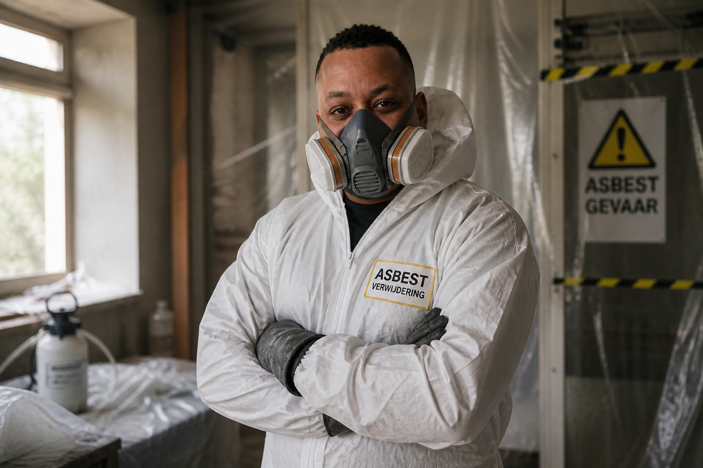

Gecertificeerd Deskundig Toezichthouder Asbest (DTA) en Deskundig Asbestverwijderaar (DAV). Voor aannemers, bedrijven en particulieren die het goed willen doen — conform de wet, zonder gedoe.

Van toezicht op de werkvloer tot volledige asbestsanering — gecertificeerd en conform alle wettelijke eisen.
Onafhankelijk toezicht op asbestverwijdering. Ik controleer of het werk veilig en conform de regels verloopt — voor aannemers, opdrachtgevers en gemeenten.
Meer info →Veilig verwijderen van asbest uit woningen, bedrijfspanden en utiliteitsgebouwen. Gecertificeerd, volledig conform SC-530 en Arbowet.
Meer info →Weet je niet waar je aan toe bent? Ik adviseer over verplichtingen, procedures en de juiste aanpak voor jouw situatie.
Meer info →Toezicht op asbestverwijdering door een gecertificeerde DTA. Zo voldoe je aan je wettelijke verplichting en werk je veilig.
Asbest gevonden in je woning? Ik regel de veilige verwijdering — van inspectie tot eindoplevering.
Renovatie, sloop of verkoop van bedrijfspand? Ik zorg voor een correcte en gedocumenteerde asbestaanpak.
Verkeerde omgang met asbest kan leiden tot ernstige gezondheidsschade, stillegging van de bouw en hoge boetes. Een gecertificeerde DTA is bij veel werkzaamheden wettelijk verplicht.